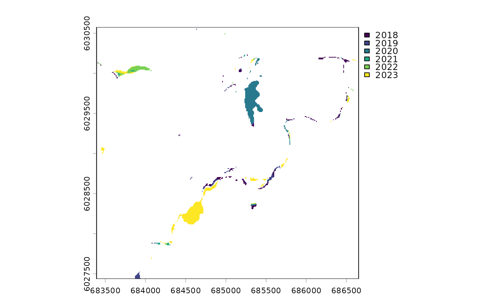

Detect sustained class switches across an annual classified series
Source:R/dft_rast_break_class.R
dft_rast_break_class.RdScan each pixel's class sequence across a named list of classified rasters
(one per year) and report whether it is stable, a clean switch (class
A for N years, then class B for M years, and nothing else) or flicker
(more than one change of class). A clean switch is dated. This is the
temporal, categorical-only leg of change QA: where
dft_transition_artifact() asks whether a patch has the shape of a
registration artifact and dft_rast_break() asks whether the spectral
signal actually moved, this asks whether the labels themselves settled.
Arguments
- x
A named list of classified
SpatRasters (e.g. fromdft_rast_classify()), one per year, whose names parse as integer years ("2017", ...). Order does not matter; layers are sorted by year. At least two, each single-layer and in the same CRS. Rasters on a different grid from the first are resampled to it (nearest neighbour).- class_table
A tibble with columns
code,class_name,color. WhenNULL, loaded viadft_class_table()usingsource.- source
Character. Used to load a shipped class table when
class_tableisNULL. One of"io-lulc"or"esa-worldcover".- unit
Character. Area unit for the summary. One of
"ha"(default),"km2", or"m2".
Value
A list with three elements:
raster: a single-layer factorSpatRasternamedtransition, encoding the first-year to last-year class pair of every pixel asfrom * 1000 + towith levels labelled"from_class -> to_class"— identical todft_rast_transition(x, from = <first>, to = <last>)$raster, so it feedsdft_transition_vectors()anddft_transition_artifact()unchanged.breaks: a four-layer integerSpatRasterof per-pixel evidence:break_year— the first year of the new class for a clean switch;NAfor stable and flicker pixelsn_before,n_after— years in the old and new class either side of the switch;NAunlessn_flips == 1. Confidence ismin(n_before, n_after): a pixel whose last year alone differs is a clean switch withn_after == 1, and one whose first year alone differs hasn_before == 1.n_flips— number of year-to-year class changes:0stable,1a clean switch,2or more flicker
summary: a tibble with one row per (from_class,to_class,status,break_year) withn_cells,areaandpctof all valid pixels.statusis"stable"(n_flips == 0),"break"(1) or"flicker"(>= 2), orNAwhere an interior year isNA;break_yearisNAexcept for"break"rows.
Details
A two-epoch comparison such as 2017 -> 2023 reports every pixel whose label
differs between the endpoints. This function splits that set: pixels with a
clean, dated switch; pixels that differ between the endpoints but flicker in
between (label noise — the borderline pixels that carry no spectral break);
and pixels that differ only because the first or last year is itself the odd
one out (n_before == 1 or n_after == 1). It also finds what the
two-epoch comparison cannot: a pixel that switched and switched back, which
reads as stable on the endpoints and is flicker here.
No threshold is applied — every measurement is reported and the caller
composes, e.g. n_flips == 1 & pmin(n_before, n_after) >= 2 for a switch
sustained at least two years on each side. Compare dft_rast_consensus(),
which votes a real mid-window switch back to its old class because the
pre-change years outnumber the post-change ones; here that pixel is a dated
break.
break_year is an integer calendar year, unlike break_date from
dft_rast_break(), which is a decimal year from a monthly spectral series.
NA handling follows the two-epoch comparison: the transition layer is NA
where the first or last year is NA, exactly as dft_rast_transition()
propagates NA from either epoch. An NA in any interior year leaves the
transition in place but makes all four evidence layers NA — the sequence
cannot be scanned — and such pixels appear in summary with status NA.
Note that IO LULC carries No Data (code 0) and Clouds (code 10) as real
classes rather than NA, so a cloudy year counts as a flip; remap or mask
them first if that is not wanted.
Memory
The scan is a single streamed terra::app() pass over the stacked series,
written to a temporary LZW-compressed file, and the summary is a
terra::crosstab() over that file — nothing full-grid is pulled into R.
Scale numbers for a 169M-cell floodplain grid (the BULK watershed group at
10 m, seven years) are in NEWS.md.
See also
dft_rast_transition() for the two-epoch comparison this splits;
dft_transition_vectors() and dft_transition_artifact(), which take
$raster unchanged; dft_rast_consensus() for the mode filter this
supersedes; dft_rast_break() for the spectral route.
Examples
# the bundled Neexdzii Kwa reach ships every IO LULC year 2017-2023
years <- 2017:2023
rasters <- lapply(years, function(yr) {
terra::rast(system.file("extdata", paste0("example_", yr, ".tif"),
package = "drift"))
})
names(rasters) <- years
classified <- dft_rast_classify(rasters, source = "io-lulc")
res <- dft_rast_break_class(classified)
head(res$summary)
#> # A tibble: 6 × 7
#> from_class to_class status break_year n_cells area pct
#> <chr> <chr> <chr> <int> <int> <dbl> <dbl>
#> 1 Trees Trees stable NA 3425 34.2 27.8
#> 2 Rangeland Rangeland stable NA 1762 17.6 14.3
#> 3 Trees Trees flicker NA 1493 14.9 12.1
#> 4 Rangeland Rangeland flicker NA 1264 12.6 10.3
#> 5 Water Water stable NA 920 9.2 7.47
#> 6 Trees Rangeland flicker NA 789 7.89 6.41
# of the pixels the 2017 -> 2023 comparison calls change, how much is a
# clean, dated switch and how much never settled?
changed <- res$summary[res$summary$from_class != res$summary$to_class, ]
tapply(changed$area, changed$status, sum)
#> break flicker
#> 21.38 12.65
# a switch is only as sure as its shorter side: n_after == 1 means the last
# year alone differs
ev <- terra::values(res$breaks)
table(pmin(ev[, "n_before"], ev[, "n_after"]))
#>
#> 1 2 3
#> 1040 347 751
terra::plot(res$breaks[["break_year"]])

# the transition layer feeds the patch tools unchanged
patches <- dft_transition_vectors(res$raster, changes_only = TRUE)
tagged <- dft_transition_artifact(patches, res$raster)
head(sf::st_drop_geometry(tagged))
#> patch_id transition area_ha width_m width_px flag_sliver
#> 1 1 Trees -> Rangeland 0.41 10.78947 1.078947 TRUE
#> 2 2 Rangeland -> Trees 0.01 5.00000 0.500000 TRUE
#> 3 3 Trees -> Rangeland 0.01 5.00000 0.500000 TRUE
#> 4 4 Trees -> Rangeland 0.01 5.00000 0.500000 TRUE
#> 5 5 Trees -> Rangeland 0.30 21.42857 2.142857 FALSE
#> 6 6 Trees -> Rangeland 0.70 24.13793 2.413793 FALSE
#> boundary_frac flag_boundary reciprocal_id reciprocal_dist_m flag_reciprocal
#> 1 0.8536585 TRUE NA NA FALSE
#> 2 1.0000000 TRUE 3 30 TRUE
#> 3 1.0000000 TRUE 2 30 TRUE
#> 4 1.0000000 TRUE NA NA FALSE
#> 5 0.0000000 FALSE NA NA FALSE
#> 6 0.1000000 FALSE NA NA FALSE